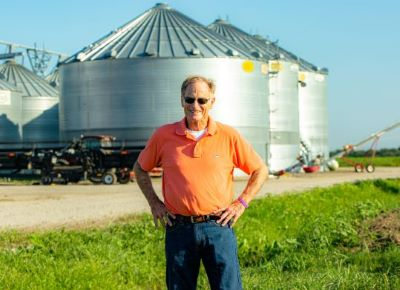
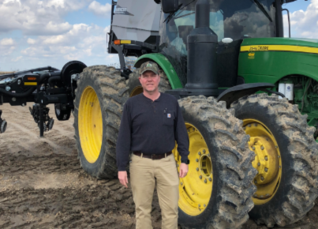

<!DOCTYPE html>

<html>

<head>

    <title>AgriCapture Inc</title>
    <meta charset="utf-8" />
    <meta name="viewport" content="width=device-width, initial-scale=1.0">
      <link rel="stylesheet" href="https://unpkg.com/leaflet@1.3.4/dist/leaflet.css" crossorigin=""/>
      <script src="https://unpkg.com/leaflet@1.3.4/dist/leaflet.js" crossorigin=""></script>   
      <script src="https://dsps.lib.uiowa.edu/placing/public/leafletSlider-1.0.2/leaflet.SliderControl.min.js"></script>
      <script src="https://dsps.lib.uiowa.edu/placing/public/fuse-1.2.1/fuse.min.js"></script>
      <script src="https://dsps.lib.uiowa.edu/placing/public/leafletFuseSearch-noVersion/leafletfuse.js"></script>
      <link rel="stylesheet" href="https://dsps.lib.uiowa.edu/placing/public/leafletFuseSearch-noVersion/leafletfuse.css" type="text/css"/>
      <script src="https://code.jquery.com/jquery-1.9.1.min.js"></script>
      <script src="https://code.jquery.com/ui/1.9.2/jquery-ui.js"></script>
      <link rel="stylesheet" href="https://code.jquery.com/ui/1.9.2/themes/base/jquery-ui.css" type="text/css">
      <script src="https://dsps.lib.uiowa.edu/placing/public/jqueryUiTouchPunch-0.2.2/jquery.ui.touch-punch.min.js"></script>
      <script src="https://klee12.github.io/dataTest/RiceFarmers.geojson"></script>
	  <script src="https://klee12.github.io/dataTest/FarmTotal.geojson"></script>

         <link rel="stylesheet" type="text/css" href="https://dsps.lib.uiowa.edu/placing/css/style.css">
         <link rel="stylesheet" type="text/css" href="https://dsps.lib.uiowa.edu/placing/css/navwrap.css">
  
  <style>
  .custom-popup {
    border-radius: 2px;
    color: #504e4e;
    font-family: 'Molengo', sans-serif;
    font-size: 12px;
    line-height: 10px;
    height: 10 px ;
    max-height: 300px;
    }

.custom-popup, .leaflet-popup-tip {
    background: #e7e7e7;
    border: none;
    box-shadow: none;
    }

.leaflet-popup-content-wrapper {
   background: #e7e7e7;
   border-radius: 2px;
   }

.leaflet-popup {
    position: absolute;
    text-align: center;
    }

.leaflet-popup-content {
    margin-top: 20px;
    margin-right: 2px;
    padding-right: 12px;
    min-width: 100 px !important;
    max-height: 300px;
    overflow: auto;
    }
    
	html, body { margin: 0; padding: 0; height: 100%; }
          #map { min-height: 100%; }
  


 .info {
    padding: 6px 8px;
    font: 14px/16px Arial, Helvetica, sans-serif;
    background: white;
    background: rgba(255,255,255,0.8);
    box-shadow: 0 0 15px rgba(0,0,0,0.2);
    border-radius: 5px;
}
.info h4 {
    margin: 0 0 5px;
    color: #777;
}


.legend {
    line-height: 18px;
    color: #555;
}
.legend i {
    width: 18px;
    height: 18px;
    float: left;
    margin-right: 8px;
    opacity: 0.7;
}


  </style>
  
  
  
  </head>
  
  
  <body>

    <div id="map" style="width: 100%; height: 700px"></div>

<script>
 

        var basemap =  L.tileLayer('https://api.maptiler.com/tiles/satellite-v2/{z}/{x}/{y}.jpg?key=VIgRA9HvUDuobZZ0dcIL', {
                    attribution: 'Created by Kun-Yuan Lee & Kurtis Eisenhuth &copy; AgriCapture Inc.  &copy; <a href="https://www.openstreetmap.org/copyright">OpenStreetMap</a> contributors',
                    subdomains: 'abcd',
                    minZoom: 0,
                    maxZoom: 20,
                    ext: 'png'
                });
        
        var map = L.map('map', {
          center: [35.9495, -90.0490],
          zoom: 8.5,
          layers: [basemap]
          });

 
        var osm = L.tileLayer('https://{s}.tile.openstreetmap.org/{z}/{x}/{y}.png', {
          maxZoom: 19,
          attribution: '© OpenStreetMap'
          });
       
	    var Tonermap =  L.tileLayer('https://api.maptiler.com/maps/toner/{z}/{x}/{y}.png?key=VIgRA9HvUDuobZZ0dcIL',{
          tileSize: 512,
          zoomOffset: -1,
          minZoom: 1,
          });
 
 //-------------getcolor--------------------------------------------------------------------
  
        function getColor(vrange){
		  return vrange == '3M Planting Company' ?   "#2548b0":   
			     vrange == 'Carter Coppage Ellis'?   "#3ab09e":
                 vrange == 'Fogleman Farms'      ?   "#cca21f":
                 vrange == 'Jarret Lawfield'     ?   "#a16ece":  
		         vrange == 'Wesson Farms, Inc'   ?   "#f24e49":  
		         vrange == 'Galen Franz'         ?   "#66a83e":
                                                     '#FFEDA0';
		}
 
 //---------set style-------------------------------------------------------------------
         function style(feature) {
			return {
			fillColor:getColor(feature.properties.OPERATOR_NAME),
			weight: 2,
			opacity: 1,
			color: '',
			dashArray: '3',
			fillOpacity: 0.5
			}
		};
 
 
 //-------------------function for highlight features----------------------------------------------	
        
		
		
		
		
		function highlightFeature(e) {
			var layer = e.target;

			layer.setStyle({
				weight: 5,
				color: '#00FFFF',
				dashArray: '',
				fillOpacity: 0
			});

			if (!L.Browser.ie && !L.Browser.opera && !L.Browser.edge) {
				layer.bringToFront();
			}
		}
		
         var geojson;  
		 
	     function resetHighlight(e) {
			geojson.resetStyle(e.target);
			
		}
	 
	     function zoomToFeature(e) {
		map.fitBounds(e.target.getBounds());
		
		}
		
		 function onEachFeature3(feature, layer) {
        
		  layer.on({
			mouseover: highlightFeature,
			mouseout: resetHighlight,
			click: zoomToFeature
			});
				
       	  
	  };
		
		
		
		geojson = L.geoJson(FarmTotal,{
			style:style,
			onEachFeature: onEachFeature3
			}).addTo(map);
  //-----------------------------------------------------------------------------
 
            
       

      // --------onEachFeature generate a popup for each location----//

      var onEachFeature = function(feature, layer) {
        
		// layer.on({
		//	mouseover: highlightFeature,
		//	mouseout:resetHighlight,
		//	click: zoomToFeature
		//	});
		
		
		if (feature.properties) {
          var prop = feature.properties;
          // make a cool little html popup with properties
          var popup = '<h3>'+' Farm '+prop['FARM_NAME']+'</h3>'+'<strong>State: </strong>'+prop['STATE']+' '+'<br><strong>Acreage:    </strong>'+prop['Acreage']+'<br><strong>CF_Practic:    </strong>'+prop['CF_Practic']+'<br><br><i> Note: data provide by AgriCapture Inc. </i>';
            // add known info about event to the description
            
          // you must create a layer property on each feature or else
          // the search results won't know where the item is on the map / layer
          feature.layer = layer;
          layer.bindPopup(popup, {maxWidth: "400"});
        }
       	  
	  }; 
	  
	  //------------------ end onEachFeature/ onEachfeature style 2 -------------------------//

       function onEachFeature1(feature, layer) {
        
		  layer.on({
			mouseover: highlightFeature,
			mouseout: resetHighlight,
			click: zoomToFeature
			});
				
       	  
	  };
    


     //-------section to add marker test ------------------------------//	  
	 // var marker = L.marker([ 35.72,-90.02])
	 //.addTo(map)
	 //.bindPopup("<h1>test</h1>")
	 //.openPopup();
	 //------------------------------------------------------------------   
      


	//----Information layer section--------------------------------------//
	
	
	
	
	

 var firstlayer = L.geoJson(RiceFarmers, {
         //add popups
        onEachFeature: onEachFeature,
        style: function(feature) {
		 switch (feature.properties.OPERATOR_NAME){
            case '3M Planting Company': return {color: "#2548b0" };
			case 'Beaver Bayou Partnership':   return {color: "##38f2b8"};
			case 'Carter Coppage Ellis': return {color: "#3ab09e"};
            case 'Chuck Day Farms Partnership':   return {color: "#d835dc"};
			case 'David Brooks Griffin': return {color: "#4e3601"};
            case 'Deline Farms Partnership':   return {color: "#9756c5"};
			case 'Deline Farms South': return {color: "#d20553"};
            case 'Double G Farming':   return {color: "#fa42b7"};
			case 'Fogleman Farms': return {color: "#cca21f"};
            case 'Griffin Farms Partnership':   return {color: "#f24e49"};
			case 'Griffin Farms South': return {color: "#2192e9"};
            case 'Jacob Ayecock':   return {color: "#fc7b06"};
			case 'Janus Farming Company Inc': return {color: "#fc7b06"};
            case 'Jarret Lawfield':   return {color: "#a16ece"};
		    case 'Larry Mcclendon Farms J V':   return {color: "#9e4428"};
		    case 'Marthinus Swart':   return {color: "#3538a7"};
		    case 'Matthew Moreland':   return {color: "#e08a18"};
			case 'Medford Farm Partnership': return {color: "#f3fa76"};
            case 'Moon Lake Farms Of Arkansas 2':   return {color: "#005a3f"};
			case 'N & K Reed Farms': return {color: "#66a83e"};
            case 'R And J Farms Ptrsp':   return {color: "#042822"};
			case 'Ratio Farms': return {color: "#bacdbe"};
            case 'Rickey Harris':   return {color: "#53e7fe"};
			case 'Soudan Farming Co': return {color: "#6c18d8"};
            case 'Stephens Partnership':   return {color: "#550f04"};
			case 'Sunset Farms': return {color: "#bacdbe"};
            case 'Tmg Farms':   return {color: "#fc7b06"};
			case 'Tucker Farms Ptr': return {color: "#3538a7"};
            case 'Vince And Susan Hillman':   return {color: "#cca21f"};
			case 'W Paul Sellers Dba Pbs Farms': return {color: "#005a3f"};
            case 'Wesson Farms, Inc':   return {color: "#f24e49"};
		    case 'William Bart Turner':   return {color: "#66a83e"};
		
			}
		  }
      }).addTo(map);
	  
	//----**section to use for the select farmer groups--------------------//

	var TFarm = L.geoJson(FarmTotal, {
         //add popups
		 onEachFeature: onEachFeature1,
         style: function(feature, latlng) {
		 switch (feature.properties.OPERATOR_NAME){
            case '3M Planting Company': return {fillcolor: "#2548b0",color: "#2548b0", weight: 2,fillOpacity:1};   
			case 'Carter Coppage Ellis': return {color: "#3ab09e",fillOpacity:1}; 
            case 'Fogleman Farms': return {color: "#cca21f",fillOpacity:1};  
            case 'Jarret Lawfield':   return {color: "#a16ece",fillOpacity:1};   
		    case 'Wesson Farms, Inc':  return {color: "#f24e49",fillOpacity:1};   
		    case 'Galen Franz':  return {color: "#66a83e",fillOpacity:1};
			}
						
		  }
      });
	  	 
		L.control.scale({
			metric:true,
			imperial: true,
			position: 'bottomleft'
			}).addTo(map);
			
		L.Control.Watermark = L.Control.extend({
			onAdd: function(map) {
		 
 		   var img = L.DomUtil.create('img');
			img.src = 'aglogo.png';
			img.style.width = '200px';
			return img;
            },
			onRemove:function(map){},
			});
			L.control.watermark = function(opts){
			return new L.Control.Watermark(opts);
			}
        L.control.watermark({position:'bottomleft'}).addTo(map);


	
	var Icon = L.icon({
    iconUrl: 'cuteman.png',
    iconSize:     [120, 120], // size of the icon
    iconAnchor:   [24.5, 94], // point of the icon which will correspond to marker's location
    popupAnchor:  [28, -70] // point from which the popup should open relative to the iconAnchor
		});
				
	//-----------Steve McKaskle section -----------------------//			
	var marker1 = L.marker([35.72,-90.02], {icon: Icon})
	.addTo(map)
	.bindPopup("<h2>Steve Mckaskle </h2>  <p>Steve McKaskle started farming in 1973 as a fifth-generation farmer. Steve wholeheartedly believes in regenerative farming and the benefits it will bring to the global agriculture industry. He has developed groundbreaking cultivation techniques with the USDA and secured relationships with notable companies such as Chipotle, Whole Foods Market, United Natural Foods, and KeHE. McKaskle Family Farms operates on over 3,000 acres cultivating a variety of crops including: popcorn, Basmati and long grain rice varieties, soybeans, corn, cotton, and oats. </p> <p> Total Farm: N/A. acers <br><strong>Total Rice Acer: 4000 acers  <br><strong> Total Climate Friendly Practice: 1000 acers <br><strong>Climate Friendly Practice: Row Rice<strong> <br>Current Inventory: N/A' <br><strong> Avaiable Inventory Start Nov 2022:1350000 <br><strong>Rice prie/Pound: N/A.  </p> ", {maxWidth: "auto"});	
	 
	
    	
	  // Pass the current marker to the function (or the popup itself)
    function collapseDetail(mark1) {
        $("#serviceTable").css("display", "none");
        $("#serviceDataDownIcon").show();
        $("#serviceDataUpIcon").hide();
        // Update the current marker's popup
        marker1.getPopup().update() // If m is the popup popup.update()
    }	
	 L.Icon.Big = L.Icon.extend({
	 options:{
	 iconSize: new L.Point(130,130),
	 iconUrl: 'cuteman.png',
	 }}); 
	 
	    var bigIcon = new L.Icon.Big();
      marker.on('mouseover', function (e) {
            this.openPopup();
            e.target.setIcon(bigIcon);
        });
        marker.on('mouseout', function (e) {
            this.closePopup();
           e.target.setIcon(marker1);
        });
	 
	 
	//-------Jerry Lawfield section---------------------------------//
   var marker2 = L.marker([36.60,-89.69], {icon: Icon})
	.addTo(map)
	.bindPopup("<h2>Jerry LawField</h2>  <p>, Jarret Lawfield is an early adopter of Climate-Friendly Rice cultivation practices that reduce GHG emissions and conserve water. He grows Furrow Irrigated Rice (FIR), or row rice, to minimize the production and release of methane from his fields. Jarret maintains an efficient nutrient management plan that ensures his rice fields are absorbing fertilizer instead of releasing nitrous oxide into the atmosphere. Jarret farms alongside his two brothers in Catron, Missouri. </p> <p> Total Farm: N/A. acers <br><strong>Total Rice Acer: 2000 acers  <br><strong> Total Climate Friendly Practice: 1000 acers <br><strong>Climate Friendly Practice: Row Rice<strong> <br>Current Inventory: N/A' <br><strong> Avaiable Inventory Start Nov 2022:290000 <br><strong>Rice prie/Pound: N/A.  </p> ", {maxWidth: "auto"});	
		
	  // Pass the current marker to the function (or the popup itself)
    function collapseDetail(mark2) {
        $("#serviceTable").css("display", "none");
        $("#serviceDataDownIcon").show();
        $("#serviceDataUpIcon").hide();
        // Update the current marker's popup
        marker2.getPopup().update() // If m is the popup popup.update()
    }	
	
	//----group all the marker points-------//
	
	var markerAll = L.layerGroup([marker1, marker2,TFarm]);
	
		
	var baseMaps = {
    "Satellite": basemap,
    "contrast": Tonermap,
	"Open Street Map": osm
		};

	var overlayMaps = {
    "Our Farmers": markerAll,
	"Farm details": firstlayer
	
	};
	
	
	

  var layerControl = L.control.layers(baseMaps, overlayMaps).addTo(map);
 


  //------------legend------------------------------------------//
  
       function getColor1(vrange){
		  return vrange > 1000 ?    "#2548b0":   
			     vrange > 500  ?    "#3ab09e":
                 vrange > 200  ?    "#cca21f":
                 vrange > 100  ?    "#a16ece":  
		         vrange > 50   ?    "#f24e49":  
		                            "#66a83e";
                                    
		}
  
  
    
  
    var legend  = L.control({position: 'bottomright'});
		legend.onAdd = function(map) {
		
		var div = L.DomUtil.create('div', 'info legend'),
		grades = [0, 55, 105, 205, 505, 1005],
        labels = ['Wesson Farms, Inc','Jarret Lawfield','Fogleman Farms','Carter Coppage Ellis','3M Planting Company','Galen Franz'];
		    for (var i = 0; i < grades.length; i++) {
        div.innerHTML +=
            '<i style="background:' + getColor1(grades[i+1]) + '"></i> ' +
            labels[i] + (grades[i + 1] ? '' + '<br>' : '');
    }

    return div;
	};

legend.addTo(map);
 

  
//----------------------------------------List of reference ------------------------------------//
  
	//layerControl.addOverlay(markergroup, "Farmers");

//var imageUrl = 'http://www.lib.utexas.edu/maps/historical/newark_nj_1922.jpg',
  //  imageBounds = [[40.712216, -74.22655], [40.773941, -74.12544]];

//L.imageOverlay(imageUrl, imageBounds).addTo(map);

 			
     // var timelineLayer = L.geoJson(bringData, {
       // onEachFeature: onEachFeature,
        //pointToLayer: function(feature, latlng) {
          //return L.circleMarker(latlng, orangeCircleMarkers);
        //}
      //});

 

      // now make a timeline layer that the slider can manipulate

      <!-- var searchLayer = L.geoJson(FarmTotal, { -->
         <!-- onEachFeature: onEachFeature1, -->
         <!-- style: function(feature, latlng) { -->
		 <!-- switch (feature.properties.OPERATOR_NAME){ -->
            <!-- case '3M Planting Company': return {fillcolor: "#2548b0",color: "#2548b0", weight: 2,fillOpacity:1};    -->
			<!-- case 'Carter Coppage Ellis': return {color: "#3ab09e",fillOpacity:1};  -->
            <!-- case 'Fogleman Farms': return {color: "#cca21f",fillOpacity:1};   -->
            <!-- case 'Jarret Lawfield':   return {color: "#a16ece",fillOpacity:1};    -->
		    <!-- case 'Wesson Farms, Inc':  return {color: "#f24e49",fillOpacity:1};    -->
		    <!-- case 'Galen Franz':  return {color: "#66a83e",fillOpacity:1}; -->
			<!-- } -->
						
		  <!-- } -->
      <!-- }); -->
	  
	  
	//  var sliderControl = L.control.sliderControl({
      //    position: "topright",
        //  layer: timelineLayer,
         // range: true // gives it a bottom and a top slider
      //});
 
//      map.addControl(sliderControl);
  //    sliderControl.startSlider(); // initialize


//---------------------------------------search options---------------------------------------------------//

      <!-- var searchOptions = { -->
        <!-- position: 'topleft', -->
        <!-- title: 'Search', -->
        <!-- placeholder: 'Example: Farm Name', -->
        <!-- maxResultLength: 10, -->
        <!-- caseSensitive: false, -->
        <!-- showInvisibleFeatures: true, -->
        <!-- layerToToggle: searchLayer, -->
        <!-- threshold: 0.5, // default is .5, will match imperfect results -->
        <!-- showResultFct: function(Feature, container) { -->
          <!-- props = Feature.properties; -->
          <!-- var name = L.DomUtil.create('b', null, container); -->
          <!-- name.innerHTML = props.OPERATOR_NAME; -->
          <!-- container.appendChild(L.DomUtil.create('br', null, container)); -->
 

          <!-- var cat = props.OPERATOR_NAME ? props.OPERATOR_NAME : props.OPERATOR_NAME , -->
              <!-- info = cat; -->
          <!-- container.appendChild(document.createTextNode(info)); -->
        <!-- } -->
      <!-- }; -->

      <!-- var searchControl = L.control.fuseSearch(searchOptions); -->
      <!-- map.addControl(searchControl); -->
      <!-- searchControl.indexFeatures(FarmTotal,['OPERATOR_NAME']); -->
 

      <!-- displayFeatures(FarmTotal, searchLayer); -->

 
      //function displayFeatures(features, layer) {
       // var popup = L.DomUtil.create('div', 'tiny-popup', map.getContainer());
        //for (var id in features) {
         // var feat = features[id];
          //var cat = feat.properties.categorie;
          //var site = L.geoJson(feat, {
           // pointToLayer: function(feature, latLng) {
            //  var marker = L.marker(latLng, {
              //          icon: orangeCircleMarkers,
               // keyboard: false,
               // riseOnHover: true
              //});
              //if (! L.touch) {
               // marker.on('mouseover', function(position) {
               // }).on('mouseout', function(position) {
                //  L.DomUtil.removeClass(popup, 'visible');
                //});
             // }
              //return marker;
            //},
           // onEachFeature: onEachFeature
          //});
          //if (layer !== undefined) {
           //   layer.addLayer(site);
         // }
        //}
        //return layer;
      //};

                //    var overlays = {
                  //  "People occupation": firstlayer
         //};

              //      var baseMaps = {
                  //  "Historic": basemap
            //        };
     
     //    L.control.layers(overlays, baseMaps, {collapsed:false}).addTo(map);
         
	

//var marker, popupContent;

//for (var i = 0; i < 1; i += 1) {
   // marker = L.marker([48.85, 2.35]).addTo(map);
  //popupContent = document.createElement("img");
  //popupContent.onload = function () {
   // marker.openPopup();
  //};
 // popupContent.src = "https://upload.wikimedia.org/wikipedia/commons/thumb/7/75/Stack_Exchange_logo_and_wordmark.svg/375px-Stack_Exchange_logo_and_wordmark.svg.png";
  //popupContent = '';
  //marker.bindPopup(popupContent, {
   // maxWidth: "auto"
  //});
//}

//marker.openPopup();
//-------------------------------------------------------------------end of referece-------------------------------------------------------------------------------------------		
		 
    </script>

  </body>

</html>
